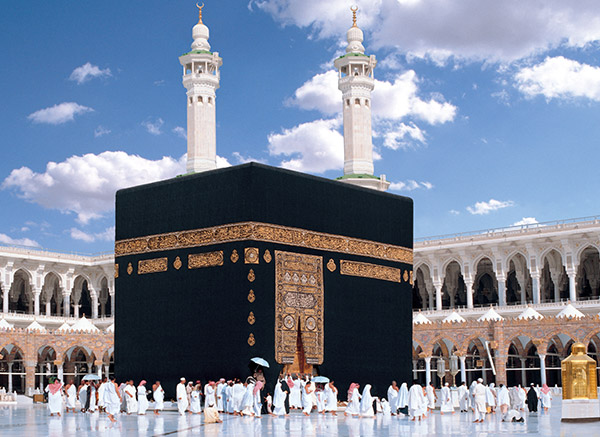
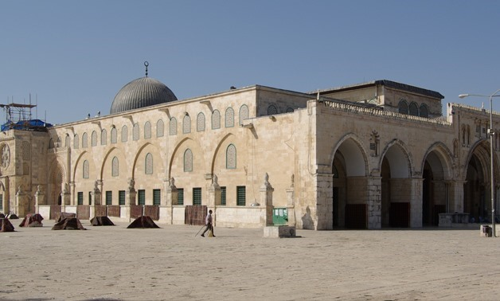

KNOWING ISLAM
AL-QURAN
The Quran (/kʊˈrɑːn/, kor-AHN;[i] Arabic: القرآن, romanized: al-Qurʼān, lit. 'the recitation', Arabic
pronunciation: [alqurˈʔaːn][ii]), also romanized Qur'an or Koran,[iii] is the central religious text of
Islam, believed by Muslims to be a revelation from God (Allah).[11] It is widely regarded as the finest work
in classical Arabic literature.[12][13][iv][v] It is organized in 114 chapters (surah (سور; singular:
سورة, sūrah)), which consist of verses (āyāt (آيات; singular: آية, āyah)).
Muslims believe that the Quran was orally revealed by God to the final prophet, Muhammad, through the
archangel Gabriel (Jibril),[16][17] incrementally over a period of some 23 years, beginning in the month of
Ramadan,[18] when Muhammad was 40; and concluding in 632, the year of his death.[11][19][20] Muslims regard
the Quran as Muhammad's most important miracle; a proof of his prophethood;[21] and the culmination of a
series of divine messages starting with those revealed to Adam, including the Tawrah (Torah), the Zabur
(Psalms) and the Injil (Gospel). The word Quran occurs some 70 times in the text itself, and other names and
words are also said to refer to the Quran.[22]
The Quran is thought by Muslims to be not simply divinely

Mansur in 754. It was
rebuilt again in 780. Another earthquake destroyed most of al-Aqsa in 1033, but two years later the Fatimid
caliph Ali az-Zahir built another mosque whose outline is preserved in the current structure. The mosaics on
the arch at the qibla end of the nave also go back to his time.[citation needed]
During the periodic renovations undertaken, the various ruling dynasties of the Islamic Caliphate
constructed additions to the mosque and its precincts, such as its dome, facade, its minbar, minarets and
the interior structure. When the Crusaders captured Jerusalem in 1099, they used the mosque as a palace and
the Dome of the Rock as a church. The structure was also the headquarters of the religious order of the
Knights Templar. After the area was recaptured by Saladin in 1187, the structure's function as a mosque was
restored. More renovations, repairs and additions were undertaken in later centuries by the Ayyubids,
Mamluks, Ottomans, the Supreme Muslim Council, and Jordan. Today, the Old City is under Israeli control, but
the mosque remains under the administration of the Jordanian/Palestinian-led Islamic Waqf.[3]
The mosque is located in close proximity to historical sites significant in Judaism and Christianity, most
notably the site of the Second Temple, the holiest site in Judaism. As a result, the area is highly
sensitive, and has been a flashpoint in the Israeli–Palestinian conflict.[4]Read more
AL-HADITH
Ḥadīth (/ˈhædɪθ/[1] or /hɑːˈdiːθ/;[2] Arabic: حديث ḥadīṯ Arabic pronunciation: [ħadiːθ], pl. aḥādīth,
أحاديث, ʾaḥādīṯ,[3][Note 1] Arabic pronunciation: [ʔaħadiːθ], literally means "talk" or "discourse") or
Athar (Arabic: أثر, ʾAṯar, literally means "tradition")[4] in Islam refers to what the majority of Muslims
believe to be a record of the words, actions, and the silent approval of the Islamic prophet Muhammad.
In other words, the ḥadīth are reports about what Muhammad said and did. As noted by Emad Hamdeh,[5] each
report is a piece of data about Muhammad; when collected, these data points paint a larger picture which is
referred to as the Sunnah.
Hadith have been called "the backbone" of Islamic civilization,[6] and within that religion the authority of
hadith as a source for religious law and moral guidance ranks second only to that of the Quran[7] (which
Muslims hold to be the word of God revealed to Muhammad). Scriptural authority for hadith comes from the
Quran which enjoins Muslims to emulate Muhammad and obey his judgments (in verses such as 24:54, 33:21).
While the number of verses pertaining to law in the Quran is relatively few, hadith give direction on
everything from details of religious obligations (such as Ghusl

or Wudu, ablutions[8] for salat prayer), to
the correct forms of salutations[9] and the importance of benevolence to slaves.[10] Thus the "great bulk"
of the rules of Sharia (Islamic law) are derived from hadith, rather than the Quran.[11][Note 2]
Ḥadīth is the Arabic word for things like speech, report, account, narrative.[3][13][14]:471 Unlike the
Quran, not all Muslims believe that hadith accounts (or at least not all hadith accounts) are divine
revelation. Hadith were not written down by Muhammad's followers immediately after his death but many
generations later when they were collected, collated and compiled into a great corpus of Islamic literature.
Different collections of hadīth would come to differentiate the different branches of the Islamic faith.[15]
There are many modern Muslims (some of whom call themselves Quranists but many are also known as Submitters)
who believe that most Hadiths are actually fabrications (pseudepigrapha)[16] created in the 8th and 9th
century CE, and which are falsely attributed to Muhammad.[17][18][16]
Because some hadith include questionable and even contradictory statements, the authentication of hadith
became a major field of study in Islam.[19] In its classic form a hadith has two parts—the chain of
narrators who have transmitted the report (the isnad), and the main text of the report (the
matn).[20][21][22][23][24] Individual hadith are classified by Muslim clerics and jurists into categories
such as sahih ("authentic"), hasan ("good") or da'if ("weak").[25] However, different groups and different
scholars may classify a hadith differently.
Among scholars of Sunni Islam the term hadith may include not only the words, advice, practices, etc. of
Muhammad, but also those of his companions.[26][27] In Shia Islam, hadīth are the embodiment of the sunnah,
the words and actions of Muhammad and his family the Ahl al-Bayt (The Twelve Imams and Muhammad's daughter,
Fatimah).[28] Read more
KAABA
The Kaaba (Arabic: ٱلْكَعْبَة, romanized: al-Kaʿbah, lit. 'The Cube', Arabic pronunciation: [kaʕ.bah]),
also
spelled Ka'bah or Kabah, sometimes referred to as al-Kaʿbah al-Musharrafah (Arabic: ٱلْكَعْبَة
ٱلْمُشَرَّفَة,
romanized: al-Kaʿbah al-Musharrafah, lit. 'Honored Ka'bah'), is a building at the center of Islam's most
important mosque, the Masjid al-Haram in Mecca, Saudi Arabia.[1][2] It is the most sacred site in
Islam.[3]
It
is considered by Muslims to be the Bayt Allah (Arabic: بَيْت ٱللَّٰه, lit. 'House of God') and is the
qibla
(Arabic: قِبْلَة, direction of prayer) for Muslims around the world when performing salah.
In early Islam, Muslims faced in the general direction of Jerusalem as the qibla in their prayers before
changing the direction to face the Kaaba, believed by Muslims to be a result of a Quranic verse
revelation
to
Muhammad.[4]
The Kaaba is believed by Muslims to have been rebuilt several times throughout history, most famously by
Ibrahim
(Abraham) and his son Ismail (Ishmael), when he returned to the valley of Mecca several years after
leaving
his
wife Hajar (Hagar) and Ismail there upon Allah's command. Circling the Kaaba seven times
counterclockwise,
known
as Tawaf (Arabic: طواف, romanized: tawaaf), is a Fard

(obligatory) rite for the completion of the Hajj
and
Umrah pilgrimages.[3] The area around the Kaaba on which pilgrims circumambulate is called the Mataaf.
The Kaaba and the Mataaf are surrounded by pilgrims every day of the Islamic year,
except the 9th
of Dhu
al-Hijjah, known as the Day of Arafah, on which the cloth covering the structure, known as the Kiswah
(Arabic:
كسوة, romanized: Kiswah, lit. 'Cloth') is changed. However, the most significant increase in their
numbers
is
during Ramadan and the Hajj, when millions of pilgrims gather for Tawaf.[5] According to the Saudi
Ministry
of
Hajj and Umrah, 6,791,100 pilgrims arrived for the Umrah pilgrimage in the Islamic year 1439 AH,[a] a
3.6%
increase from the previous year, with 2,489,406 others arriving for the 1440 AH Hajj.[6] The literal meaning
of
the word Ka'bah (Arabic: كعبة) is cube.[7] In the Qur'an, from the era of the life of Muhammad, the Kaaba
is
mentioned by the following names:
al-Bayt (Arabic: ٱلْبَيْت, lit. 'the house') in 2:125 by Allah[Quran 2:125][8]
Baytī (Arabic: بَيْتِي, lit. 'My House') in 22:26 by Allah[Quran 22:26][9]
Baytik al-Muḥarram (Arabic: بَيْتِكَ ٱلْمُحَرَّم, lit. 'Your Inviolable House') in 14:37 by Ibrahim[Quran
14:37]
al-Bayt al-Ḥarām (Arabic: ٱلْبَيْت ٱلْحَرَام, lit. 'The Sacred House') in 5:97 by Allah[Quran 5:97]
al-Bayt al-ʿAtīq (Arabic: ٱلْبَيْت ٱلْعَتِيق, lit. 'The Ancient House') in 22:29 by Allah[Quran 22:29]
According to historian Eduard Glaser, the name "Kaaba" may have been related to the southern Arabian or
Ethiopian word "mikrab", signifying a temple.[10] Author Patricia Crone disputes this etymology.[11] Read more
MEDINA
Medina,[a] officially Al Madinah Al Munawwarah (Arabic: المدينة المنورة, romanized: al-Madīnah
al-Munawwarah, lit. 'The Enlightened City', Hejazi pronunciation: [almadiːna almʊnawːara]), commonly
simplified as Madīnah or Madinah (Arabic: المدينة, romanized: al-Madina, Hejazi pronunciation:
[almadiːna]), is the second holiest city in Islam and the capital of the Medina Province of Saudi
Arabia.
The 2020 estimated population of the city is 1,488,782,[2] making it the fourth-most populous city in
the
country.[3] Located at the core of the Medina Province in the western reaches of the country, the city
is
distributed over 589 square kilometers (227 square miles), 293 km2 (117 sq. mi.) of which constitutes
the
city's urban area, while the rest is occupied by the Hejaz mountain range, empty valleys, agricultural
spaces and older dormant volcanoes.
The city is considered to be the second-holiest of three cities in Islamic tradition, the other two
being
Mecca and Jerusalem. The Masjid al-Nabawi ('Prophet's Mosque') built by Muhammad in 622 CE, is of
exceptional importance in Islam and is the site of burial of the last Islamic prophet. Muslims visit his
rawdhah in what is known as Ziyarat at least once in their lifetime, although this is not obligatory.

[4] The
original name of the city before the advent of Islam was Yathrib (Arabic: يَثْرِب) and it is referred to by
the same name in the Qur'an in Chapter 33, al-Ahzab (The Confederates). It was renamed Madīnat an-Nabī (City
of the Prophet or The Prophet's City) after Muhammad's death and later al-Madinah al-Munawwarah (The
Enlightened City), before being simplified and shortened to its modern name, Madinah (The City), written in
English as Medina. Saudi Arabian road signage uses Madinah and al-Madinah al-Munawwarah interchangeably.[4]
The city existed for over 1,500 years before Muhammad's migration from Mecca,[5] otherwise known as the
Hijrah. Medina was the capital of a rapidly increasing Muslim caliphate under Muhammad's leadership, serving
as its base of operations and as the cradle of Islam, where Muhammad's Ummah (Community), composed of the
citizens of Medina, known as the Ansar and those who immigrated with Muhammad, known as the Muhajirun,
collectively known as the Sahaba, gained huge influence. Medina is home to three prominent mosques, namely
al-Masjid an-Nabawi, Masjid Quba'a, and Masjid al-Qiblatayn, with the masjid at Quba'a being the oldest in
Islam. A larger portion of the Qur'an was revealed in Medina in contrast to the earlier Meccan surahs.[6][7]
Much like most of the Hejaz, Medina has seen numerous exchanges of power within its comparatively short
existence. The region has been controlled by Arabian Jewish tribes (up to the 5th century CE), the 'Aws and
Khazraj (up to Muhammad's arrival), Muhammad and the Rashidun (622–660 CE), Umayyads (660–749 CE), Abbasids
(749–1254 CE), the Mamluks of Egypt (1254–1517 CE), the Ottomans (1517–1805 CE), the First Saudi State
(1805–1811 CE), Muhammad Ali Pasha (1811–1840 CE), the Ottomans for a second time (1840–1918), the Hashemite
Sharifate of Mecca (1918–1925 CE) and finally is in the hands of the modern-day Kingdom of Saudi Arabia
(1925–present CE).[4]
In addition to visiting for Ziyarah, tourists come to visit the other prominent mosques and landmarks in the
city that hold religious significance such as Mount Uhud, Al-Baqi' cemetery and the Seven Mosques among
others. Recently, after the Saudi conquest, the Saudis carried out a demolition of several tombs and domes
in and around the region fearing these might become sites of association of others in worship beside Allah
(shirk).[8] Read more
AL-AQSA
l-Aqsa Mosque (Arabic: ٱلْمَسْجِد ٱلْأَقْصَىٰ, romanized: al-Masjid al-ʾAqṣā, IPA: [ʔælˈmæsdʒɪd
ælˈʔɑqsˤɑ]
(About this soundlisten), "the Farthest Mosque"), located in the Old City of Jerusalem, is the third
holiest
site in Islam. The mosque was built on top of the Temple Mount, known as the Al Aqsa Compound or Haram
esh-Sharif in Islam, several decades after Muhammad's death. Modern Muslims believe that Muhammad was
transported from the Great Mosque of Mecca to this location during the Night Journey. Islamic tradition
holds that Muhammad led prayers towards this site until the 16th or 17th month after his migration from
Mecca to Medina, when Allah directed him to instead turn towards the Kaaba in Mecca.[2]
The covered mosque building was originally a small prayer house erected by Umar, the second caliph of
the
Rashidun Caliphate, after the Muslim conquest of the Levant in the early 7th century. It was rebuilt and
expanded by the Umayyad caliph Abd al-Malik and finished by his son al-Walid in 705. The mosque was
completely destroyed by an earthquake in 746 and rebuilt by the Abbasid caliph al-
